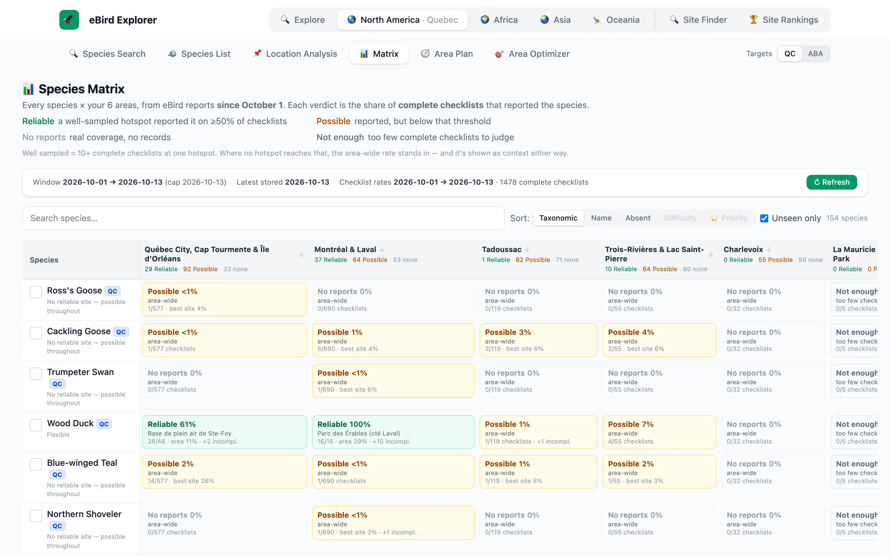
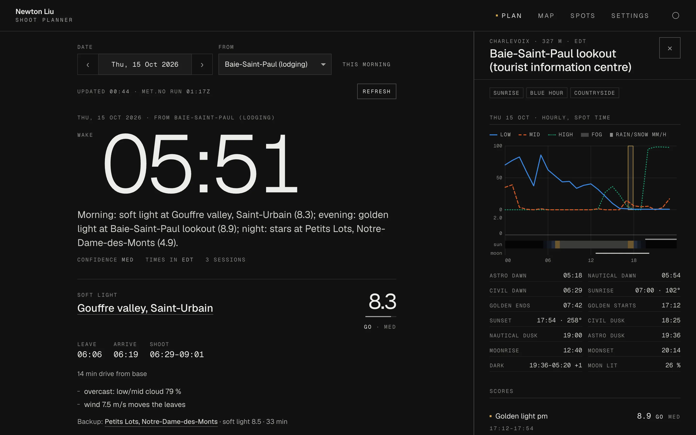
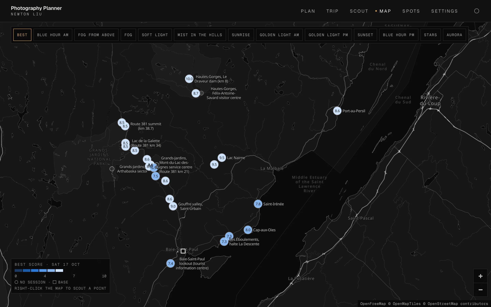

A birding trip planner built on eBird’s live data. For a given area, users input target species and the engine searches for where they’ve been reported lately, and which hotspots hold the most of them, generating an actionable plan for birders.
Area plan: every hotspot in an area, ranked by how many target birds it holds

Species matrix: each bird against each area, by its share of complete checklists
Web app · 2026Under construction
Photography Planner
A planner for landscape photography. Pick a date and a base, and it searches for and scores photography spots for different times of day and different elements (sunrise, sunset, golden light, soft light, fog, stars and aurora) using forecast, tide and space-weather data. Then it builds the day: when to wake, where to drive, and a backup for each session, with the reasons behind every score. It started with a stormy week in Charlevoix, Quebec, in October 2026.
Day plan: when to wake, then a pick and a backup for each session, with the reasons

Spot sheet: the day’s cloud layers, fog and rain hour by hour, against the sun and moon

Map: every spot marked with its best score for the day
Web app · 2026Under construction
Retreat Finder
A finder for places to stay on trips. Claude searches Airbnb, VRBO, Booking.com and hosts’ own sites and reads each listing. The app scores every place against a curated taste: views, designs, workspace, solitude, etc. It shows the evidence behind each judgement, remembers every rejected place and why, and tracks prices for exact dates.
Inspired by the viral food ranking app Beli, this is a personal ranking system of the eBird hotspots a user has birded. Each visit gets a score for the quality of the birds, the number of species and the experience; then, pairwise comparisons put every site in order within its tier, so the list says which places were really the best.
It runs alongside eBird Explorer and shares its sign-in.